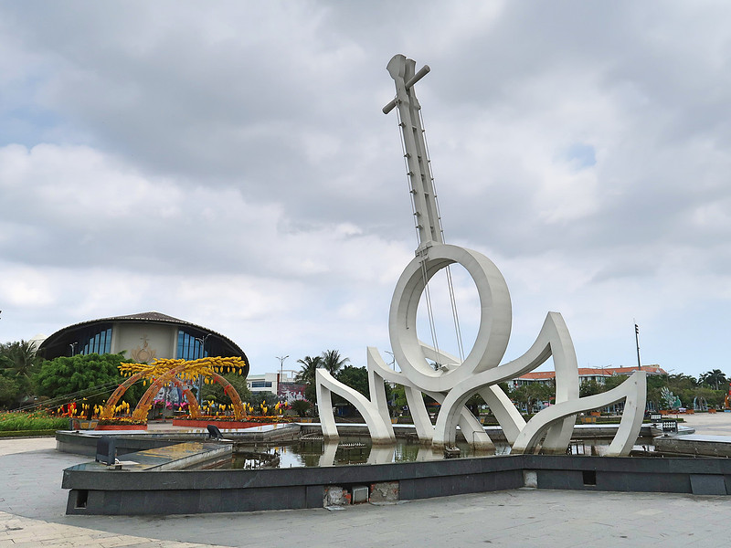
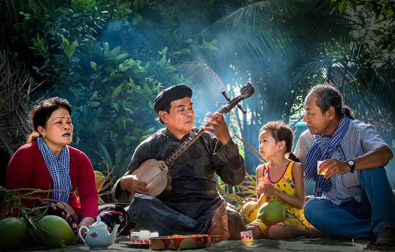

Nơi những câu vọng cổ ngân lên giữa
miền sông nước phương Nam.
Tiếng đàn kìm da diết ấy đã văng vẳng qua bao thăng trầm, ngấm sâu vào từng dòng sông, bãi bồi và hóa thành linh hồn của dải đất phương Nam. Bước sang chặng đường mới khi Bạc Liêu cùng Cà Mau quy về một "ngôi nhà chung", vùng đất di sản này không mất đi nét mộc mạc, hào sảng vốn có mà còn mang theo trọn vẹn những ký ức, câu chuyện và giai điệu đi cùng năm tháng vươn mình vào nhịp thở hôm nay.

Bạc Liêu một tỉnh nằm ở miền Tây Nam Bộ của Việt Nam, có một lịch sử phong phú và đa dạng. Vùng đất này đã trải qua nhiều giai đoạn phát triển từ thời kỳ tiền sử đến hiện đại. Trong quá khứ, Bạc Liêu từng là một trung tâm quan trọng của các nền văn hóa cổ đại, với những di tích khảo cổ học đáng chú ý. Ngoài ra, Bạc Liêu cũng nổi tiếng với các truyền thống văn hóa đặc sắc, bao gồm âm nhạc dân gian, lễ hội truyền thống và các nghề thủ công truyền thống.

Bạc Liêu một tỉnh nằm ở miền Tây Nam Bộ của Việt Nam, có một lịch sử phong phú và đa dạng. Vùng đất này đã trải qua nhiều giai đoạn phát triển từ thời kỳ tiền sử đến hiện đại. Trong quá khứ, Bạc Liêu từng là một trung tâm quan trọng của các nền văn hóa cổ đại, với những di tích khảo cổ học đáng chú ý. Ngoài ra, Bạc Liêu cũng nổi tiếng với các truyền thống văn hóa đặc sắc, bao gồm âm nhạc dân gian, lễ hội truyền thống và các nghề thủ công truyền thống.

Bạc Liêu một tỉnh nằm ở miền Tây Nam Bộ của Việt Nam, có một lịch sử phong phú và đa dạng. Vùng đất này đã trải qua nhiều giai đoạn phát triển từ thời kỳ tiền sử đến hiện đại. Trong quá khứ, Bạc Liêu từng là một trung tâm quan trọng của các nền văn hóa cổ đại, với những di tích khảo cổ học đáng chú ý. Ngoài ra, Bạc Liêu cũng nổi tiếng với các truyền thống văn hóa đặc sắc, bao gồm âm nhạc dân gian, lễ hội truyền thống và các nghề thủ công truyền thống.

Bạc Liêu một tỉnh nằm ở miền Tây Nam Bộ của Việt Nam, có một lịch sử phong phú và đa dạng. Vùng đất này đã trải qua nhiều giai đoạn phát triển từ thời kỳ tiền sử đến hiện đại. Trong quá khứ, Bạc Liêu từng là một trung tâm quan trọng của các nền văn hóa cổ đại, với những di tích khảo cổ học đáng chú ý. Ngoài ra, Bạc Liêu cũng nổi tiếng với các truyền thống văn hóa đặc sắc, bao gồm âm nhạc dân gian, lễ hội truyền thống và các nghề thủ công truyền thống.